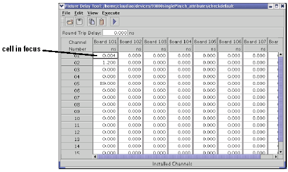

Using the edit menu to manipulate cell contents
The functions in the Edit menu allow you to make changes to the fixture delay values in the Fixture Delay Tool window. Before you can use the Edit functions to change the contents of a cell, that cell must be in focus. Clicking a cell puts the cell in focus. A cell that is in focus is identified by a bold cell border. See the figure below. Note that only one cell at a time can be in focus. The Copy and Paste functions from the Edit menu can only be applied to a cell that is in focus. Double-clicking a cell puts the cell in focus and places the cursor in the cell for manual editing of the cell contents.
The Go to Channel selection from the Edit menu allows you to type in a specific five digit number to put a particular cell in focus. For example, the five digit number corresponding to the cell that is in focus in the figure below is 10101. This is the combination of the mainframe/board number (101) and the channel/pin number (01).
